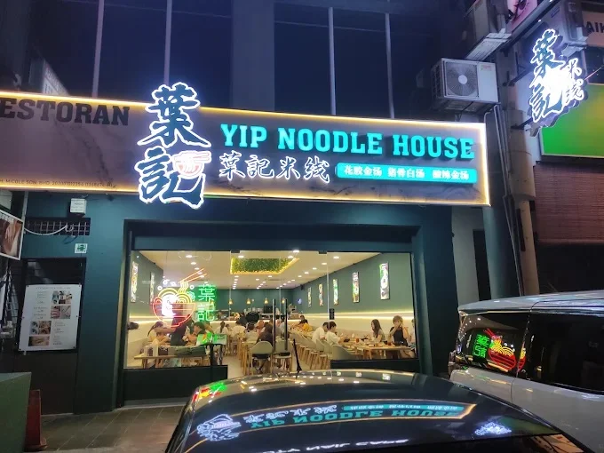

Asian food
Yip Noodle House
RM 20–40 / person
Yip Noodle House is a popular, modern-cozy casual eatery specializing in customizable Yunnan-style rice noodles and flavorful, rich broths. Diners can pick their preferred noodles, such as chewy Yunnan rice noodles or Hong Kong thin noodles, and mix and match proteins and sides like pork slices, chicken, handmade fish paste and fried beancurd skin. It is a good choice for anyone who enjoys building their own bowl.
Signature dishes
- Golden Fish Maw Soup — RM 20.90
- Signature Creamy Fish Head Soup — RM 24.90
Reservation deposit: RM 20 per booking